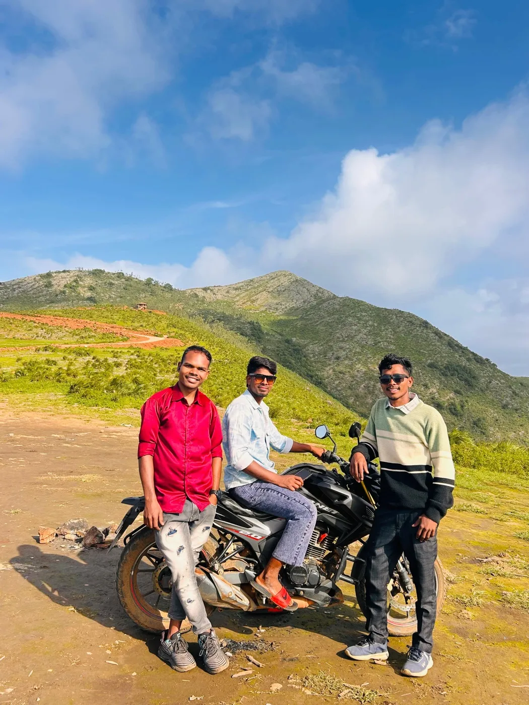

Whether your goal is to hike up Vanjangi before dawn to witness clouds rolling beneath your feet, enjoy a resort campfire under starry mountain skies, or admire swollen waterfalls surrounded by monsoon rainforests, here is your definitive seasonal guide.
Seasonal Summary at a Glance
Araku Valley experiences three distinct micro-climatic seasons influenced by the Eastern Ghats topography:
Winter (October – March)
Peak SeasonAvg Temperature: 8°C – 25°C • Highlight: Vanjangi Cloud Bed, Foggy Mornings, Night Bonfires
Winter is unquestionably the most popular and magical time to visit Araku. The air is delightfully cool, morning fog hangs over coffee plantations until 10:00 AM, and nighttime temperatures drop to a comfortable chill.
- Vanjangi Hill Sunrise: November through February is the prime window to witness the sea of clouds stretching across the valley at dawn.
- Coffee Berry Harvest: Watch tribal farmers hand-pick crimson Arabica berries across Ananthagiri.
- Lambasingi Cold Snaps: Just 90 km away, Lambasingi (the "Kashmir of Andhra") often touches 1°C to 4°C in mid-January.

Monsoon (July – September)
Lush & DramaticAvg Temperature: 20°C – 28°C • Highlight: Full-Flow Waterfalls, Emerald Green Valleys, Cloud Forest
If you love moody hill station weather, rainy day road trips, and dramatic cloud formations, the monsoon months will mesmerize you. The Eastern Ghats transform into a vivid emerald green blanket with hundreds of seasonal cascades tumbling down roadside cliffs.
- Katiki & Chaparai Waterfalls: Water flows at their absolute peak volume, making rocky natural water slides exciting to watch.
- Fresh Mountain Streams: Streams flowing near Borra Caves and tribal hamlets run crystalline and pure.
- Fewer Crowds: Enjoy serene viewpoints without holiday rush.

Summer (April – June)
Quiet & Budget FriendlyAvg Temperature: 22°C – 35°C • Highlight: Borra Caves, Museum Walks, Padmapuram Gardens
While daytime temperatures in the plains around Vizag can soar above 40°C, Araku remains significantly cooler due to its 900+ metre elevation. Evenings are pleasant, hotel rates are economical, and major sightseeing locations have minimal wait times.
Vanjangi Cloud Sunrise: When & How to Plan
The Vanjangi Hills sunrise viewpoint (located about 25 km from Araku near Paderu) has gained national fame as South India’s most magnificent cloud sea. To see the thick white carpet of clouds at its peak:
Vanjangi Sunrise Checklist
- Prime Months: Mid-November through late February.
- Trek Start Time: Reach the base village by 4:00 AM to complete the 3.5 km hike before the 5:45 AM sunrise.
- Flashlights & Grip Shoes: The rocky trail is completely unlit; carry strong torches or headlamps.
- Stay Local: Stay overnight at Araku town or choose our private 1N/2D tour package that includes pre-arranged dawn transport.
What to Pack for Each Season
October to February: Bring layered woollens, thermals (especially for children and elderly), light windcheaters, and moisturizers for the dry mountain morning air.
July to September: Pack a sturdy umbrella, rain poncho, waterproof phone pouch, and slip-resistant footwear for waterfall visits.
April to June: Light cotton garments, sun hats, polarized sunglasses, and sunscreen for daytime excursions.
Planning Your Guided Araku Experience
Regardless of which month you travel, planning your logistics with native local experts guarantees that you don't miss hidden viewpoints, seasonal coffee tastings, or optimal cave timings.